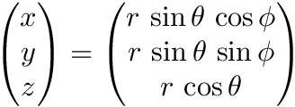
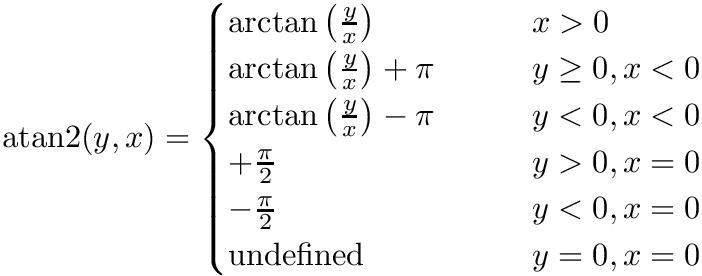

|
Ses3d-NT
simulation of elastic wave propagation in spherical sections
|
This module provides few low-level procedures to convert coordinates among spherical and Cartesian coordinate systems. More...
Functions/Subroutines | |
| real(real_kind) elemental function, public | lat2colat (lat) |
| Converting latitude to colatitude. More... | |
| real(real_kind) elemental function, public | colat2lat (colat) |
| Converting colatitude to latitude. More... | |
| real(real_kind) elemental function, public | rad2deg (rad) |
| Converting angles from radians to degrees. More... | |
| real(real_kind) elemental function, public | deg2rad (deg) |
| Converting angles from degrees to radians. More... | |
| real(real_kind) elemental function, public | depth2radius (depth) |
| Converts a depth value (measured form the Earth's surface) into its corresponding radius. More... | |
| real(real_kind) elemental function, public | radius2depth (radius) |
| Converts a radius into its depth value with respect to the Earth's radius. More... | |
| elemental subroutine, public | xyz2tpr (x, y, z, theta, phi, r) |
| Converts Cartesian coordinates (x,y,z) into spherical coordinates (theta,phi,r) More... | |
| elemental subroutine, public | tpr2xyz (theta, phi, r, x, y, z) |
| Converts spherical coordinates (theta,phi,r) into Cartesian coordinates (x,y,z) More... | |
This module provides few low-level procedures to convert coordinates among spherical and Cartesian coordinate systems.
The module expects to find the parameters parameters_mod::real_kind, parameters_mod::earth_radius and parameters_mod::pi in a module named parameters_mod.
| real(real_kind) elemental function, public coordinate_utilities_mod::colat2lat | ( | real(real_kind), intent(in) | colat | ) |
Converting colatitude to latitude.
| colat | colatitude [deg] |
Definition at line 61 of file coordinate_utilities_mod.f90.
| real(real_kind) elemental function, public coordinate_utilities_mod::deg2rad | ( | real(real_kind), intent(in) | deg | ) |
Converting angles from degrees to radians.
| deg | Angle in degrees |
Definition at line 79 of file coordinate_utilities_mod.f90.
| real(real_kind) elemental function, public coordinate_utilities_mod::depth2radius | ( | real(real_kind), intent(in) | depth | ) |
Converts a depth value (measured form the Earth's surface) into its corresponding radius.
| depth | (positive values; starting from the Earth's surface) [meters] |
Definition at line 89 of file coordinate_utilities_mod.f90.
| real(real_kind) elemental function, public coordinate_utilities_mod::lat2colat | ( | real(real_kind), intent(in) | lat | ) |
Converting latitude to colatitude.
| lat | latitude [deg] |
Definition at line 52 of file coordinate_utilities_mod.f90.
| real(real_kind) elemental function, public coordinate_utilities_mod::rad2deg | ( | real(real_kind), intent(in) | rad | ) |
Converting angles from radians to degrees.
| rad | Angle in radians |
Definition at line 70 of file coordinate_utilities_mod.f90.
| real(real_kind) elemental function, public coordinate_utilities_mod::radius2depth | ( | real(real_kind), intent(in) | radius | ) |
Converts a radius into its depth value with respect to the Earth's radius.
| radius | radius [meters] |
Definition at line 98 of file coordinate_utilities_mod.f90.
| elemental subroutine, public coordinate_utilities_mod::tpr2xyz | ( | real(real_kind), intent(in) | theta, |
| real(real_kind), intent(in) | phi, | ||
| real(real_kind), intent(in) | r, | ||
| real(real_kind), intent(out) | x, | ||
| real(real_kind), intent(out) | y, | ||
| real(real_kind), intent(out) | z | ||
| ) |
Converts spherical coordinates (theta,phi,r) into Cartesian coordinates (x,y,z)

| theta | inclination in spherical coordinates [rad] |
| phi | azimuth in spherical coordinates [rad] |
| r | radial-component in spherical coordinates |
| x | x-component in Cartesian coordinates |
| y | y-component in Cartesian coordinates |
| z | z-component in Cartesian coordinates |
Definition at line 150 of file coordinate_utilities_mod.f90.
| elemental subroutine, public coordinate_utilities_mod::xyz2tpr | ( | real(real_kind), intent(in) | x, |
| real(real_kind), intent(in) | y, | ||
| real(real_kind), intent(in) | z, | ||
| real(real_kind), intent(out) | theta, | ||
| real(real_kind), intent(out) | phi, | ||
| real(real_kind), intent(out) | r | ||
| ) |
Converts Cartesian coordinates (x,y,z) into spherical coordinates (theta,phi,r)
In terms of the standard arctan function, whose range is (-pi/2, pi/2), it can be expressed as follows:

| x | x-component in Cartesian coordinates |
| y | y-component in Cartesian coordinates |
| z | z-component in Cartesian coordinates |
| theta | inclination in spherical coordinates [rad] |
| phi | azimuth in spherical coordinates [rad] |
| r | radial component in spherical coordinates |
Definition at line 125 of file coordinate_utilities_mod.f90.